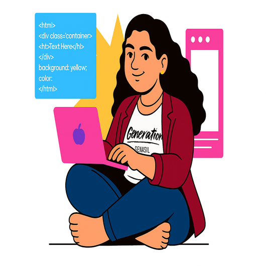

Desenvolvedora de Software com sólida base em desenvolvimento Full Stack utilizando React, Node.js, TypeScript e SQL. No dia a dia, aplico metodologias ágeis como Scrum e Kanban e utilizo ferramentas como Git para o versionamento de código. Combino essas habilidades técnicas com experiência prévia em gestão de projetos, trabalho em equipe e liderança, possuindo um perfil analítico e colaborativo, focado em traduzir necessidades de negócio em soluções eficientes e de alta qualidade.
